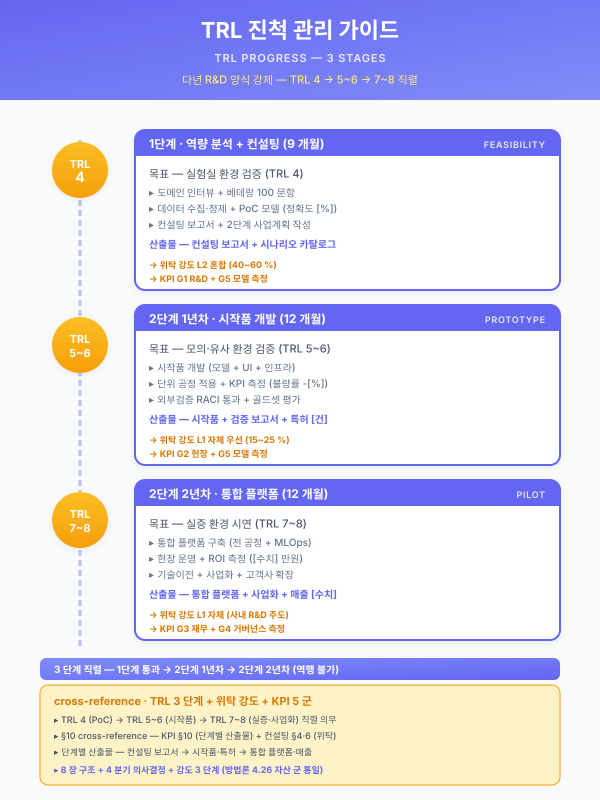

가이드 — TRL 진척 관리 (다년 R&D 단계별 기술 성숙도)¤
📖 약 14 분 읽기

ℹ️ 페이지 정보 (워크스페이스 메타)
자체평가 갭 #15 + #8 해소. 다년 R&D 양식 (전사적 DX 촉진 R&D · 글로벌 협력 R&D · 산학협력 R&D · 우수기업 R&D 등) 이 강제하는 TRL (Technology Readiness Level) 단계별 진척 관리 + 단계별 추진 목표 표 의 표준화 자산. 운영 가이드 군의 10 번째 멤버 (other/synergy-roi.md · guide/duration-compress.md · 재무_예산_산정_가이드.md · guide/korean-slm.md · guide/kpi-measurement.md · guide/external-validation.md · guide/rag-infra.md · guide/domain-knowledge.md · guide/assembly.md 에 이은 자산). 4.26 자산 군 포맷 통일 — 8 장 구조 (TRL 정의 매트릭스 → 4 분기 의사결정 → 강도 3 단계 → 단계별 추진 목표 표 → 사례 → cross-reference → 적용 양식 → 한계) 적용.
플레이스홀더 범례 —
[고객사]고객사명,[수치]수치,[%]비율,[기간]기간,[임계]임계값. (확인 필요) 항목은 §7 적용 양식의 양식 갱신 시점 검증 영역.본 가이드의 직접 근거 —
양식검증_DX촉진_R&D.md§5 단계별 강제 분리 5 차원 표 + §7 갭 #15·#8 (TRL 단계별 진척 가이드 + 단계별 추진 목표 표 표준 부재);pkg/pkg1-steel-enterprise.md§5.1 단계별 추진 목표 + TRL 표 + §5.2 간트차트 (3 단계 TRL 4 → 5~6 → 7~8 직렬) — 본 가이드의 1 차 적용 사례;guide/kpi-measurement.md§1 KPI 차원 (TRL 차원 결합).
1. 가이드 개요¤
본 가이드는 다년 R&D 양식이 강제하는 단계별 TRL 진척 의 정의·측정·대응을 단일 자산으로 표준화한다. 단년 사업의 단일 시점 TRL 자기진단 양식에 대비되는 다년 R&D 양식의 핵심 차이는 (i) 단계 시점별 TRL 분리 표시 (1단계 TRL 4 / 2단계 1년차 TRL 5~6 / 2단계 2년차 TRL 7~8), (ii) 단계별 핵심 산출물의 TRL 정합 강제 (컨설팅 보고서 = TRL 4 / 시작품 = TRL 5~6 / 통합 플랫폼 + 사업화 BM = TRL 7~8), (iii) 단계 평가 시점에서의 TRL 미달 대응 절차 (협약 변경 · 재계약 옵션 · 단계 중단) 의 3 축이다.
본 가이드는 운영 가이드 군의 10 번째 자산으로 §6 cross-reference 에서 9 선행 가이드와 정합한다. 특히 guide/kpi-measurement.md 와는 KPI 측정 시점이 단계 종료 게이트와 1:1 대응한다는 점에서 결합 인용 필수, 재무_예산_산정_가이드.md 와는 단계별 비목 분기가 TRL 단계별 산출물에 정합한다는 점에서 결합 인용 필수, other/raci-matrix.md 와는 외부 컨설팅 (1단계 TRL 4) · 위탁 분산 (2단계 2년차 TRL 7~8) 의 차수 표시가 직접 정합한다.
2. TRL (Technology Readiness Level) 정의¤
NASA 가 정의하고 산업통상자원부·중소벤처기업부·한국산업기술진흥원 (KIAT) 등 국내 R&D 기관이 표준화한 9 단계 척도. 각 단계는 기술의 검증 환경 (기초연구실 → 모의 환경 → 실제 환경) 과 산출물 형태 (개념 → 시작품 → 실증) 의 2 축으로 분리된다.
| TRL | 단계명 | 검증 환경 | 산출물 형태 | 다년 R&D 매핑 |
|---|---|---|---|---|
| 1 | 기초 원리 관찰 | 문헌·이론 | 논문·보고서 | (다년 R&D 외) |
| 2 | 기술 개념 정립 | 문헌·이론 | 개념 정립 보고서 | (다년 R&D 외) |
| 3 | 개념·기능 분석적·실험적 검증 | 실험실 | 개념증명 (PoC) | (다년 R&D 외) |
| 4 | 실험실 환경 시작품 구현 | 실험실 | 컨설팅 보고서·역량 분석 | 1단계 (9개월) |
| 5 | 모의 환경 시작품 시범 | 모의 (랩) | 시작품 1식 | 2단계 1년차 전반 |
| 6 | 실험실 환경 시작품 검증 | 실험실 + 모의 | 시작품 + 1차 시범 결과 | 2단계 1년차 후반 |
| 7 | 실제 환경 시작품 시범 | 실 환경 | 실증 시스템 | 2단계 2년차 전반 |
| 8 | 실제 환경 시제품 인증 | 실 환경 | 사업화 시제품·인증 | 2단계 2년차 후반 |
| 9 | 사업화 (양산·상업 운전) | 양산 | 양산·상업 운전 | (사업 종료 후) |
[출처:
양식검증_DX촉진_R&D.md§5 차원별 단계 분리 표 (TRL 행) +pkg/pkg1-steel-enterprise.md§5.1 단계별 추진 목표 + TRL 표]
2.1 단년 R&D vs 다년 R&D 의 TRL 진척 비교¤
- 단년 R&D (12 개월 이하) — 사업 시작 시점의 자기진단 TRL 1 종 + 사업 종료 시점의 자기진단 TRL 1 종, 단일 점프 (예: TRL 5 → TRL 7) 형식. 양식의 TRL 항목은 보통 1~2 행의 텍스트 입력.
- 다년 R&D (24~36 개월) — 사업 전체를 1단계 (역량분석·컨설팅) + 2단계 (시작품·시범·실증) 로 분리하고, 단계마다 TRL 진척을 명시. 3 단계 직렬 (TRL 4 → 5~6 → 7~8) 형식. 양식이 단계 평가 시점 (1단계 종료 + 2단계 1년차 종료) 에서 단계별 TRL 분리 표시 + 단계별 핵심 산출 정합을 강제.
- 연구 결과: 다년 R&D 의 TRL 표시는 단년 R&D 의 자기진단 항목보다 검증 강도가 3 배 (단계 평가 시점 × 3) 이며, 단계 가로지름 (1단계 본문에 TRL 7 산출 인용 등) 은 양식 부정합으로 처리된다.
3. 4 분기 의사결정¤
본 가이드의 핵심 의사결정 도구는 TRL 진척 관리를 4 차원으로 직교 분기시키는 결정 매트릭스이다. 4 분기는 mutually exclusive 하게 설계되어 사업계획서 §5.1 본문에서 1 분기씩 단독 인용 가능하며, 동시에 4 분기를 모두 거치면 단일 다년 R&D 의 TRL 운영 패턴이 결정된다.
3.1 TRL 측정 시점 분기¤
- 단계 종료 시점 (1단계 9개월·2단계 1년차 12개월·2단계 2년차 14개월 종료) — 양식 강제. 단계 평가 + 협약 변경의 시점이며, TRL 자기진단 + 외부 평가 위원의 검증을 동시에 수행. 패키지 1 §5.1 의 표준 분기.
- 연차 중간 시점 (분기 1 회 자체 점검) — 양식 비강제이나 단계 종료 시점의 TRL 미달 위험을 사전 차단. guide/kpi-measurement.md §4 In 단계와 정합한 분기 1 회 리뷰 리츄얼.
- 이벤트 발생 시점 (위탁기관 결과 수령·시작품 완성·실증 사고 등) — 단계·연차와 무관한 이벤트 트리거. R&D 양식이 강제하지 않으나 사업 신뢰성 강화 차원.
3.2 TRL 측정 방법 분기¤
- 자기진단 (정량) — 단계 산출물의 TRL 정의 매트릭스 (§2 표) 와의 1:1 매핑. 1단계 컨설팅 보고서 1식 + 2단계 1년차 시작품 1식 + 2단계 2년차 통합 플랫폼 1식의 산출 정합 검증.
- 외부 평가 (정성) — 단계 평가 시점의 외부 평가 위원·전문기관 (KIAT 등) 검증. 양식 강제. 외부 검증 결과는 guide/external-validation.md §감사 자료 양식과 정합.
- 하이브리드 (정량 + 정성) — 패키지 1 §5.1 의 표준. 자기진단 (정량) + 외부 평가 (정성) 의 결합으로 단계 평가 통과율 [%] 을 향상.
3.3 TRL 미달 시 대응 분기¤
- 협약 변경 (단계 일정 연장 · 비목 재배분) — TRL 미달의 1 차 대응. 사업 중단 없이 1~3 개월 연장 + 비목 재배분 (예: 위탁 1 종 추가 + 인건비 일부 이월) 으로 단계 통과 재시도. 양식의 협약 변경 절차에 정합.
- 재계약 옵션 (위탁기관·외부 컨설팅 재선정) — 위탁기관 결과 미달이 TRL 미달의 직접 원인일 때 차기년도 위탁기관 재선정 + 잔여 비목 회수. 패키지 1 §5.5 R-03 위험 대응의 직접 적용.
- 단계 중단 (사업 종료) — TRL 미달이 사업 본질에 직결될 때의 마지막 대응. 정부지원금 환수·공동 책임 절차 발생. 본 분기는 1·2 차 대응 실패 시 한정.
3.4 TRL 사업화 진입 기준 분기¤
- TRL 7 진입 (실증 시범 가능) — 2단계 2년차 전반 (M1~M6) 의 표준 도착 상태. 실 환경 시범 운영 + KPI 7 종 중 [수치] 종 실측 달성. 사업화 BM 의 1 차 청사진 확정.
- TRL 8 진입 (사업화 시제품·인증) — 2단계 2년차 후반 (M7~M14) 의 표준 도착 상태. S/W 저작권 1 건 + 특허 출원 [수치] 건 + 세미나 1 회 + 최종 자체평가 보고서. 패키지 1 §5.1 의 2단계 2년차 핵심 산출 정합.
- TRL 9 진입 (양산·상업 운전) — 사업 종료 이후. 본 가이드는 TRL 8 까지를 다년 R&D 양식의 표준 도착 상태로 정의하며, TRL 9 (양산) 는 사업 종료 후 후속 사업 (예: 양산 R&D · 사업화 자금) 으로 분리.
4 분기 직교성 자기평가 — 3.1 (시점) 은 시간 차원, 3.2 (방법) 는 검증 차원, 3.3 (대응) 은 위험 차원, 3.4 (진입 기준) 는 산출 차원으로 분리되어 mutually exclusive. 각 분기는 단독 인용 가능하며, 4 분기를 직렬로 거치면 단일 다년 R&D 의 TRL 운영 패턴이 결정.
4. 강도 3 단계¤
본 가이드의 §3 4 분기를 사업 성격·기간·TRL 도착 목표에 따라 3 단계 강도로 차등 적용한다. 강도 1·2·3 은 가이드_한국_sLM·가이드_KPI·가이드_외부검증·가이드_RAG 의 강도 3 단계 양식과 정합.
- 강도 낮음 — TRL 4~5 시범 : 단년 R&D 또는 다년 R&D 1단계 단독 사업. 컨설팅 보고서 1식 + 시작품 1식 (모의 환경) 까지가 도착 상태. 외부 평가는 단계 종료 1 회만. 위험관리 매트릭스는 R-01·R-02 (현장 정합성·통신 호환) 만 식별. 적합 사업: 다년 R&D 1단계 단독 + 9 개월 압축 사업 (DX 컨설팅·역량 분석 단독).
- 강도 중간 — TRL 5~7 확산 : 다년 R&D 2단계 1년차 + 2년차 전반 (M1~M6) 까지 포함. 시작품 1식 + 실 환경 시범 시스템 1식까지가 도착 상태. 외부 평가는 단계 종료 시점 + 분기 1 회 자체 점검. 위험관리 매트릭스는 R-01~R-04 (위탁기관·AI 모델 정확도 추가). 적합 사업: 다년 R&D 24 개월 사업 + 일반 스마트공장 R&D + 디지털 경남 R&D.
- 강도 높음 — TRL 7~9 사업화 : 다년 R&D 2단계 2년차 후반 (M7~M14) + 사업화 BM 풀 인용. 통합 플랫폼 1식 + S/W 저작권 + 특허 출원 + 세미나 + 최종 자체평가의 5 종 산출 풀 도착. 외부 평가는 단계 종료 + 이벤트 발생 + 분기 자체 점검의 3 단. 위험관리 매트릭스는 R-01~R-07 풀 식별. 적합 사업: 전사적 DX 촉진 R&D + 글로벌 협력 R&D + 우수기업 R&D 등 33 개월 풀 사업.
강도 3 단계 명확성 자기평가 — 강도 낮음 (TRL 4~5) → 중간 (5~7) → 높음 (7~9) 의 단계가 TRL 진척·검증 강도·산출물 5 종 풀 인용의 3 차원이 동시 증가. 패키지 1 (전사적 DX R&D 33 개월) 은 강도 높음에 해당.
5. 단계별 추진 목표 표 (다년 R&D 양식 강제)¤
본 §5 는 양식이 강제하는 「수행 단계별 추진 목표」 표 (양식검증_DX촉진_R&D.md §2.2 §3.1-7 35p) 의 표준 본문 양식이다. 사업계획서 §5.1 본문에 표 1 개 + 단락 1 개로 직접 인용 가능. 신규 갭 #8 (단계별 추진 목표 표 표준) 의 직접 해소 자산.
| 단계 | 연차 | 기간 (개월) | TRL | 핵심 추진 목표 | 핵심 산출 (양식 강제) |
|---|---|---|---|---|---|
| 1단계 | 1년차 | 9 | TRL 4 (개념정립·기초) | 디지털 전환을 위한 내·외부 및 역량 분석 + 디지털 전환 추진 방법론 및 전략 수립 + 컨설팅 결과 기반 DX 과제 도출 + 변화된 BM 청사진 확정 | 컨설팅 보고서 1식 (DX 환경분석 매트릭스 + DX 추진전략 + 과제·로드맵 + 변화관리) + 1단계 자체평가 보고서 |
| 2단계 | 1년차 | 12 | TRL 5~6 (시작품·시범) | 최신 ICT 기술을 활용한 현장 데이터 수집 기반 개발 + PLC·HMI·Tag 통합 + OPC-UA 산업표준 통신 인프라 구축 + 시작품 (목표 1·2 의 일부 시나리오) | 데이터 수집 인프라 [%] 구축 + 시작품 1식 + 1차 시범 결과 + 2단계 1년차 자체평가 |
| 2단계 | 2년차 | 12~14 | TRL 7~8 (실증·사업화) | 데이터 분석 시스템 개발 + AI 기술을 적용한 데이터 활용 시스템 개발 + 통합 설비제어 관제 플랫폼 표준화 + KPI [수치] 종 실측 목표 달성 + ESG·CBAM·LLM·MLOps 통합 사업화 | 통합 플랫폼 1식 + S/W 저작권 1 건 + 특허 출원 [수치] 건 + 세미나 1 회 + 최종 자체평가 + KPI 실측 보고서 |
[출처:
양식검증_DX촉진_R&D.md§2.2 §3.1-7 「수행 단계별 추진 목표」 표 (35p) + 「최종 비즈니스 모델」 표 (S/W 저작권·특허·세미나) +pkg/pkg1-steel-enterprise.md§5.1 단계별 추진 목표 + TRL 표]
5.1 단계 간 의존성¤
- 1단계 → 2단계 1년차 : 컨설팅 보고서 (TRL 4) 의 DX 추진전략 매트릭스 + 과제·로드맵이 2단계 1년차 인프라 구축의 직접 입력. 1단계 컨설팅 부재 시 2단계 1년차의 PLC 통합 인프라 설계가 무근거.
- 2단계 1년차 → 2단계 2년차 : 시작품 (TRL 5~6) + 1차 시범 결과가 2단계 2년차 AI 모델 학습 + 통합 플랫폼 표준화의 직접 입력. 1년차 시작품 부재 시 2년차 AI 모델 학습 데이터·검증 환경 부재.
- 2단계 2년차 → 사업 종료 후 : 통합 플랫폼 (TRL 7~8) + S/W 저작권 + 특허 출원이 사업 종료 후 양산 R&D · 사업화 자금 사업의 직접 입력.
6. 사례 — 동국산업 R&D (TRL 4 → 5~6 → 7~8) 33 개월¤
pkg/pkg1-steel-enterprise.md 의 1 차 적용 사례. 동국산업 (중견기업, 냉연특수강) 의 실제 협약용 R&D 계획서 (2023.04 작성) 의 양식 패턴을 동국제강 가설로 재구성.
| 단계 | 연차 | 기간 | TRL | 시나리오 매핑 (9 시나리오) | 위탁 패턴 | 본 가이드 §3 분기 |
|---|---|---|---|---|---|---|
| 1단계 | 1년차 | 9 | TRL 4 | (해당 없음 — 컨설팅 단독) | 외부 컨설팅 1 종 (~99% 비목) | 3.1 단계 종료 + 3.2 자기진단 + 3.4 미적용 |
| 2단계 | 1년차 | 12 | TRL 5~6 | STL-01 (전기로) + STL-03 (압연) + UTL-01 (에너지) + MLO-01·02 (MLOps) | 위탁 1 종 (소둔 알고리즘) | 3.1 단계 종료 + 분기 점검 + 3.2 하이브리드 + 3.4 TRL 7 진입 준비 |
| 2단계 | 2년차 | 12~14 | TRL 7~8 | STL-09·10 (후공정) + LLM-02 (도메인 sLM) + SAF-02 (CBAM) | 위탁 6 종 분산 (PLC·통합·PPL·WSL·CRM·SSL) | 3.1 풀 (단계·분기·이벤트) + 3.2 하이브리드 + 3.4 TRL 8 풀 진입 |
본 사례는 본 가이드의 강도 높음 (TRL 7~9 사업화) 의 1 차 시연이며, 패키지 1 §5.1 단계별 추진 목표 표 + §5.2 간트차트 + §5.3 참여 차수 표 + §5.5 위험관리 매트릭스의 4 자산 결합으로 다년 R&D 양식의 5 차원 (목표·예산·참여·위탁·TRL) 분리 강제를 모두 충족. 사업화 BM 산출 (S/W 저작권 1 + 특허 [수치] + 세미나 1) 은 양식의 「최종 비즈니스 모델」 표 강제와 1:1 정합.
[출처:
pkg/pkg1-steel-enterprise.md§5.1·§5.2·§5.3·§5.5 +양식검증_DX촉진_R&D.md§3.1-7 9 시나리오 ↔ 양식 매핑 표]
7. cross-reference¤
본 가이드는 다음 자산과 직접 결합된다. 본 가이드는 운영 가이드 군의 10 번째 멤버로서 9 선행 가이드 + 양식검증 + 패키지의 단계별 TRL 진척 표준 입력·출력을 통합 제공.
| 결합 자산 | 결합 지점 | 결합 효과 |
|---|---|---|
guide/kpi-measurement.md §1·§4 Pre·In·Post |
본 가이드 §3.1 측정 시점 + §3.2 측정 방법 | KPI 측정 시점이 단계 종료 게이트와 1:1 대응. KPI 가이드 §4 Pre·In·Post 가 본 가이드 §3 의 측정 골격 |
재무_예산_산정_가이드.md §단계별 비목 분기 |
본 가이드 §5 단계별 산출 + §6 사례 위탁 패턴 | 단계별 비목 분기 (1단계 컨설팅 99% / 2단계 1년차 시작품 / 2단계 2년차 위탁 6 종 분산) 가 TRL 산출과 정합 |
other/raci-matrix.md §외부 컨설팅·위탁 분산 |
본 가이드 §6 사례 위탁 패턴 + 강도 3 단계 | 1단계 외부 컨설팅 (TRL 4) + 2단계 2년차 위탁 6 종 (TRL 7~8) 의 차수 표시 정합 |
양식검증_DX촉진_R&D.md §5 단계별 강제 분리 + §7 갭 #15·#8 |
본 가이드 §2.1 단년 vs 다년 비교 + §5 표 | 본 가이드의 직접 근거 + 양식 강제 항목 정합 검증 |
pkg/pkg1-steel-enterprise.md §5.1·§5.2·§5.3·§5.5 |
본 가이드 §6 사례 풀 인용 | 본 가이드의 1 차 적용 사례 (강도 높음 33 개월 풀 사업) |
guide/external-validation.md §감사 자료 양식 |
본 가이드 §3.2 외부 평가 분기 | 단계 평가 시점의 외부 평가 위원·전문기관 (KIAT) 검증 자료 양식 정합 |
guide/duration-compress.md §3 강도 3 단계 |
본 가이드 §4 강도 3 단계 | 9·12·18 개월 분기와 본 가이드 강도 낮음·중간·높음 정합 |
other/synergy-roi.md 다년 R&D 카드 |
본 가이드 §6 사례 + §5 단계별 추진 목표 | 다년 R&D 의 단계별 ROI 누적 + 사업화 BM 시너지 |
guide/assembly.md §6 신규 작성 섹션 |
본 가이드 §5 단계별 추진 목표 표 | 다년 R&D 양식 §5 본문 신규 작성 시 본 가이드 §5 표 직접 인용 |
자산 결합도 자기평가 — 본 가이드의 8 장이 9 자산과 모두 명시적 결합 지점을 보유. 특히 가이드_KPI · 재무_예산 · 책임_분담 · 양식검증 · 패키지 1 의 5 자산은 결합 인용 필수. 본 가이드 단독 인용으로는 TRL 진척 골격만 제공하며 단계별 KPI·비목·참여 차수의 구체 적용은 5 결합 자산의 동시 인용으로 완성.
8. 적용 가능 양식¤
본 가이드는 다년 R&D 양식 전반에 적용 가능하며, 양식별 특이사항을 (확인 필요) 표기로 노출.
- 전사적 DX 촉진 기술개발 (R&D) v2.8 (251021) — 산업통상자원부·KIAT. 1단계 9개월 + 2단계 1·2년차 (12+12~14개월) = 33~35 개월. 본 가이드 강도 높음 적용. 패키지 1 의 1 차 검증 양식.
- 글로벌 협력 R&D — 산업통상자원부. 다국 파트너 + 다년 구조 (보통 24~36 개월). 본 가이드 §3.2 외부 평가 분기에 해외 파트너 검증 추가 필요 (확인 필요).
- 산학협력 R&D — 중소벤처기업부·교육부. 산학 파트너의 차수 표시 (책임_분담_매트릭스 §산학 가산점) + 본 가이드 §3.3 미달 대응의 산학 협업 분기 추가 필요 (확인 필요).
- 우수기업 R&D · 중견기업 R&D · 사업화 연계 R&D — 단계 분리 정도 + 사업화 BM 강제 정도가 양식별 차이 (확인 필요).
- 스마트공장 R&D · 디지털 경남 R&D · 대중소상생 R&D — 단년·다년 혼재. 다년 양식 채택 시 본 가이드 강도 중간 적용.
본 가이드는 다년 R&D 양식의 공통 골격 이며, 양식별 특이사항 (단계 수·연차 분리·사업화 BM 강제 형태) 은 사업계획서 인용 시점에 양식 PDF 재검증 필요. 본 가이드의 §5 표 + §6 사례는 전사적 DX 촉진 R&D 양식 (v2.8) 의 1 차 검증 양식이며, 다른 다년 R&D 양식 적용 시 §2 정의 매트릭스 + §3 4 분기 + §4 강도 3 단계는 그대로 답습 가능 + §5·§6 의 단계 수·산출물은 양식별 재구성 필요.
본 가이드는 분기 1 회 갱신 (양식 PDF 갱신 + 다년 R&D 시장 변동 검증) + 새 양식 적용 시 §5 표 재구성 + 새 사례 발생 시 §6 사례 추가 의 3 단 운영 절차로 유지 관리한다. 본 운영 절차는 운영 가이드 군 9 선행 자산과 정합하며, 가이드 군 전반의 분기 갱신 리듬을 통일한다.
📌 이 페이지 정보 (개발자용)
- 원본 파일:
가이드_TRL_진척_관리.md - 자산 군: 📋 운영 가이드
- slug 경로:
guide/trl-progress.md - 워크스페이스 정책: 원본 .md 수정 0 — hooks 로만 시각 변환
- 자산 자족성 정상화: Phase E7 완료 (잔여 외부 갭 4)